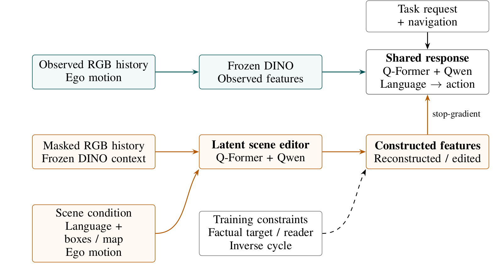
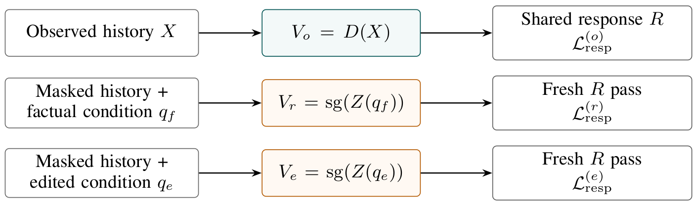

Preserve ordinary driving
Real DINO features from unedited camera history supply the response.
Visual inputObserved features
RoleFactual language + driving
Under review · ICLR 2027
Visually Mediated VLA Alignment
through Latent Scene Editing
A language-described scene change should enter the visual representation before it shapes a driving model’s language and action.
The response never receives the edit condition or editor state.
01 / Overview
Vision-language-action driving models can respond to language-defined situations without representing the described change in their visual state. A plausible hypothetical action alone therefore does not establish visual grounding.
RESCENE studies alignment through condition-exclusive visual mediation. A latent scene editor masks affected camera-history evidence and predicts DINO features on edited camera-time-patch support. A separate response pass receives assembled features, task, and navigation inputs—but neither the edit condition nor the editor state—and generates language followed by route and trajectory.
Factual feature reconstruction, frozen semantic supervision, and an inverse feature cycle constrain the constructed representation without paired counterfactual images. Matched comparisons, an independent feature reader, and same-world language–action tests are designed to distinguish visual mediation from shortcuts.
02 / Approach
Ordinary driving uses observed features. The edited path constructs a changed visual state before a fresh response pass. The paths share response weights, not hidden states.
Condition-exclusive mediation. Edit tokens, editor hidden states, and attention cache do not enter the response. The response uses constructed visual features, not the condition as a separate input.

Original paper diagram. The responsive diagram above preserves its information flow.
03 / Training
Each view has an independent response pass. All three use the same response weights; constructed features are detached before the response loss.
Real DINO features from unedited camera history supply the response.
Masked history is reconstructed toward the corresponding observed feature target.
The editor predicts conditioned features; semantic and inverse-cycle losses constrain them.
A frozen training reader constrains supported attributes; it is not the independent reader used for evaluation. No paired counterfactual RGB target is assumed.

Original paper schematic for the three training views.
04 / Evaluation
The manuscript specifies tests of the constructed features, generated language, generated action, and ordinary-driving retention.
Does generated language describe supported attributes of the same edited world?
With task and navigation fixed, does action change—or stay invariant—when the world requires it?
With the visual world fixed, does the correct task request outperform a shuffled one?
Manuscript Table 1 compares RESCENE with direct-condition and reference controls on matched sources and training schedules. The matched-direct control trains the auxiliary editor with the same losses, but does not feed its output to the response.
05 / Interpretation
The architecture makes visual mediation testable; it does not, by itself, demonstrate visual grounding.
Reconstruction, semantic supervision, and the inverse cycle constrain features, not a physically complete counterfactual RGB scene.
Edited scenes use annotation-derived spatial hints in training and offline evaluation. Ordinary driving uses the observed path.
Feature meaning, same-world language and action, and retained observed-scene driving must be assessed together.
06 / Citation
Author and affiliation information is intentionally omitted during double-blind review.
@misc{anonymous_rescene_2027,
title = {RESCENE: Visually Mediated VLA Alignment through Latent Scene Editing},
author = {Anonymous},
note = {Under review at ICLR 2027}
}